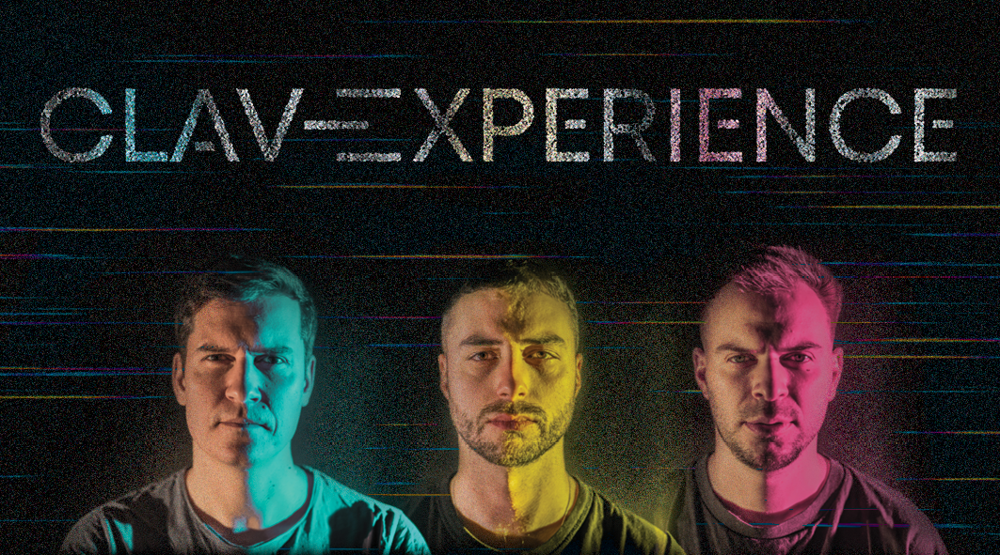

Sofia, Bulgaria · Electronic · Jazz · Improv

"The group that gets the originality prize" Kevin Le Gendre — JAZZWISE
Scroll
"The group that gets the originality prize" Kevin Le Gendre — JAZZWISE

SkilleR · Pavel Terziyski · Dimitar Gorchakov
"..the group that gets the originality prize is Clavexperience, a trio fronted by vocalist Pavel Terziyski that weaves together scat, beatboxing and a rainbow of keyboards and electronic soundscapes.."
Clavexperience is an electro band of three, mixing beatbox, synths and vocals. Their performance relies on improvising much of their material from scratch, blending electronic music and jazz. Each performer is a unique artist, part of this amazing experience — the Clavexperience.
Clavexperience's music is characterized by its experimental approach and its ability to blend various genres. They seamlessly fuse electronic elements with live instrumentation, creating a sound that is both captivating and innovative. Skiller's beatboxing adds an additional layer to their music, setting them apart from other bands in their genre.
Clavexperience is the first Bulgarian band to play at the world's largest place for the international jazz scene — jazzahead!

SkilleR (Alexander Deyanov) is a beatboxer from Sofia, Bulgaria. Known as the 'fast mouth' from the East, he has brought the art of beatboxing to mass attention in Bulgaria. In 2012 SkilleR became world champion of Beatbox Battle World Championship (BBBWC) in Berlin. Another significant highlight of his career is the successful collaboration with the Grammy winning choir — The Mystery of the Bulgarian Voices and Lisa Gerrard in the album 'BooCheeMish' (2018). With more than 70 000 000 views on YouTube and over 200 000 followers in the social networks, SkilleR is a well known artist in the world. Despite his age he has been on stage in countries from 4 different continents. Alexander takes his beatboxing beyond the traditional hip hop influences into a much wider range of contemporary styles.

Dimitar Gorchakov is a Bulgarian pianist who started playing classical music on the piano at a young age, winning awards in national and international competitions. The pianist's current and future projects involve creating original jazz and electronic music, using synthesizers and acoustic instruments. Gorchakov has given concerts in Bulgaria and Europe, showcasing his debut album for solo piano — "Tomorrow's Past" and continues to create art not only in music, but also in photography. He combines his love for photography and music, creating performances that constantly evolve and challenge the audience to be direct participants. His musical journey took a drastic turn over 10 years ago when he entered the world of jazz music, folklore, electronics and free improvisation. He has participated in many stylistically diverse projects and since 2015 he has been working with Ivo Dimchev, a prominent figure in the contemporary art world. Together they have performed at many festivals across 3 continents.

Pavel Terziyski is a unique vocal performing artist whose diverse techniques carry listeners to other lands and deeper levels. From robust, percussive bass lines to soaring melodies, Pavel has spent the past decade and a half performing a broad catalogue of solo and collaborative work with some of the biggest names in the Bulgarian underground, experimental and jazz scenes. Known for his originality and impressive improvising skills, Pavel has entertained audiences around Europe at venues in Germany, U.K., Austria, Norway and the Netherlands. With three solo albums and many collaborations, he stands for uniqueness in self expression and creativity. As a theatre composer he worked on various theatrical performances, and won an IKAR Award for Best Music in 2019 for "Home for Sheep and Dreams", by Zdrava Kamenova.
The band's ability to blend electronica and jazz, combined with their use of live instrumentation and beatboxing, creates a sound that is both unique and captivating. With their talent and potential, Clavexperience is a band that should not be overlooked by festivals, venues, producers and labels looking for fresh and exciting new talents.
Follow us for live updates, new music and upcoming shows.